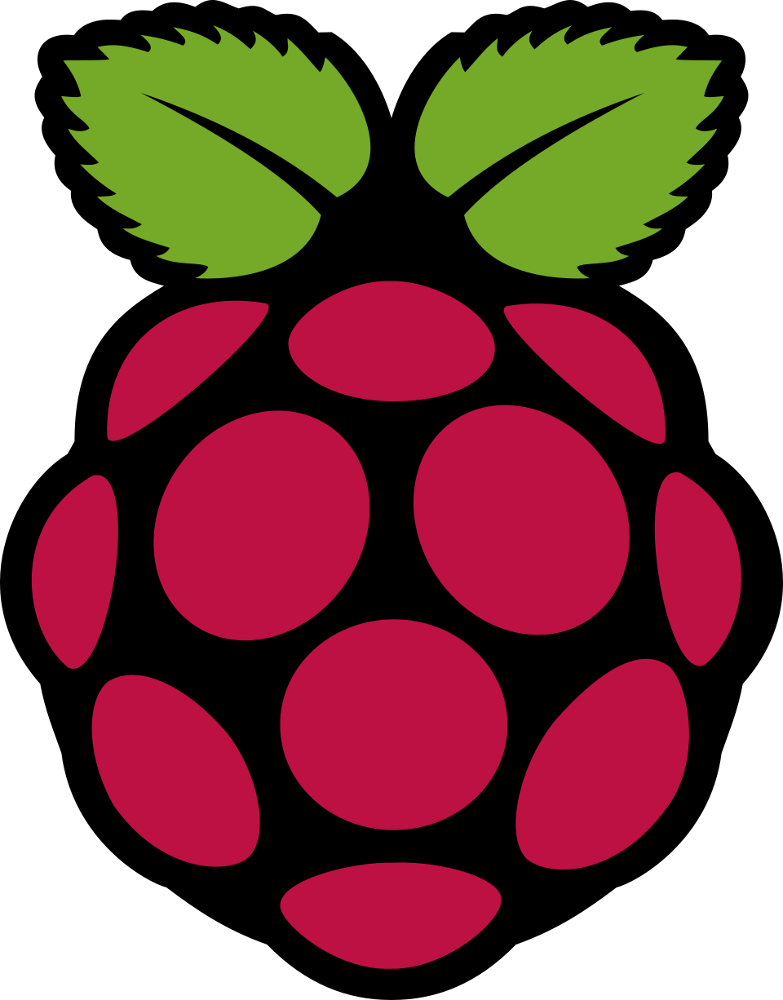
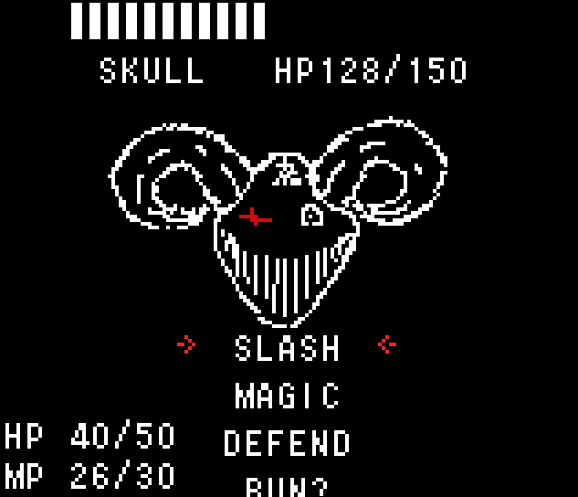

LCD-screen-kernel-driver
Linux kernel I2C client driver for Raspberry Pi 3B (BCM2837, ARM) that controls an HD44780 LCD through a PCF8574 backpack and exposes a character device at /dev/lcd-screen.
View Project ›Software Engineer building practical systems, resilient backends, and connected products

Linux kernel I2C client driver for Raspberry Pi 3B (BCM2837, ARM) that controls an HD44780 LCD through a PCF8574 backpack and exposes a character device at /dev/lcd-screen.
View Project ›Custom Linux platform driver that controls one GPIO LED defined in Device Tree. Matches on compatible = "mycompany,my-leds", with LED GPIO defined in a nested child node. Supports configurable initial state via module parameter and optional blinking via delayed workqueue.
View Project ›This patch adds default-gateway inheritance for static routes that do not define an explicit gateway, and keeps inherited routes synchronized when the active default route changes.
View Project ›Tuya integration stack for RUTOS/OpenWrt in this SDK tree. The project bridges Tuya IoT Cloud messages to local ubus methods, then forwards hardware requests to an ESP-based module over serial.
View Project ›Custom Board game site - Next.js 16 app for room-based play, including join flows, player dashboard, wiki, and shop.
View Project ›Concurrent Go HTTP server implementing a pub/sub messaging pattern over a single REST endpoint, leveraging goroutines for efficient topic-based message publishing and streaming.
View Project ›Multi-threaded C networking utility that measures latency, download throughput, and upload bandwidth by benchmarking against the nearest server via ICMP and TCP socket operations.
View Project ›A custom implementation of the Unix `ls` command written in C. This project replicates core directory listing functionality, handling file metadata and basic flags while demonstrating low-level systems programming.
View Project ›A lightweight custom implementation of the standard printf function written in C. Handles formatted output, variadic arguments, and multiple format specifiers while replicating core functionality of the C standard library.
View Project ›A console implementation of the classic Mastermind game written in C. The game uses digits (0–8) as piece identifiers. Your objective is to guess the secret 4-digit code within a limited number of rounds.
View Project ›Step into the rotting flesh of a parasite-infected zombie in this chilling 2D horror platformer. Eat all humans!.
View Project ›You've crash-landed on a bizarre alien planet dominated by strange living bubbles. Beautiful yet unpredictable, they hold valuable resources — but danger lurks everywhere. The planet's natives see you as an intruder and will hunt you down. Choose wisely, scavenge carefully, and survive. Made in GameMaker Studio for Global Game Jam 2025.
View Project ›
Made for GBJam 12 in 10 days. In this turn-based RPG-style battle simulator, you play as a holy knight on a quest to purge evil from an eldritch castle. Fight your way through horrifying hell creatures and save the world.
View Project ›